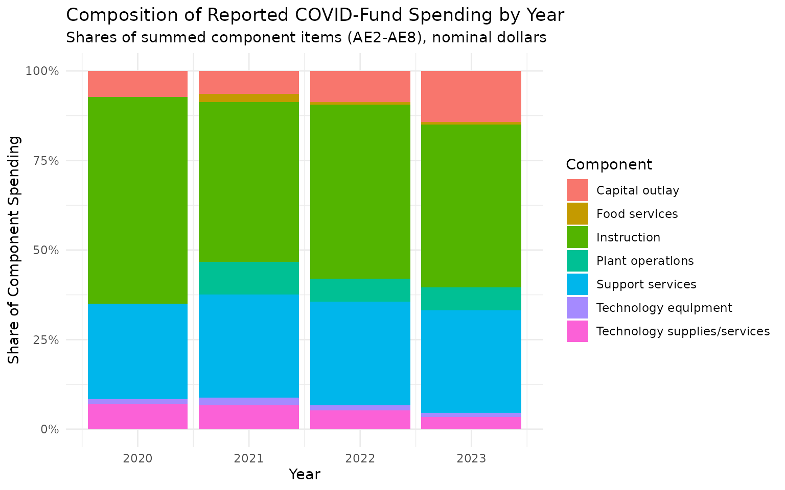
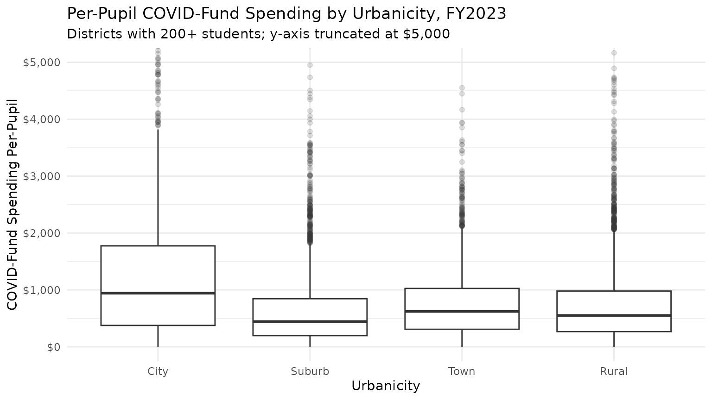
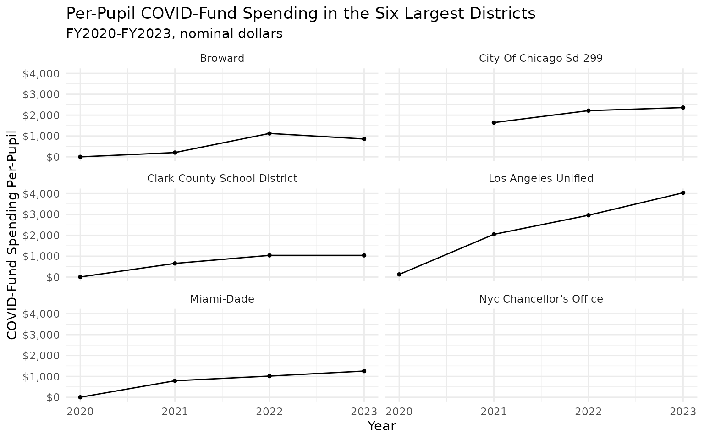

Introduction
Beginning in FY2020, the F-33 survey added items tracking district
expenditures of temporary federal COVID-19 assistance funds (ESSER and
related programs). edfinr’s full dataset
carries these as the exp_covid_* variables, which let you
see how much pandemic aid districts spent, on what, and how spending
ramped up and began to decline within the FY2020-FY2023 window. The
window is right-censored: FY2023 ends in June 2023, more than a year
before the ESSER III obligation deadline of September 30, 2024, so the
final spend-down (and the fiscal cliff that followed it) lies beyond
this panel.
The eight variables map to F-33 items AE1-AE8 (see
list_variables("full")):
-
exp_covid_total(AE1) – total expenditures from COVID-19 federal assistance funds. -
exp_covid_instr(AE2) – instructional expenditures. -
exp_covid_supp(AE3) – support services expenditures. -
exp_covid_cap_out(AE4) – capital outlay expenditures. -
exp_covid_tech_supp(AE5) – technology-related supplies and purchased services. -
exp_covid_tech_equip(AE6) – technology-related equipment. -
exp_covid_supp_plant(AE7) – operation and maintenance of plant (from FY2021). -
exp_covid_food(AE8) – food services operations (from FY2021).
Important caveats
-
Full dataset only. The
exp_covid_*variables are not in the skinny dataset; requestdataset_type = "full". -
Availability. AE1-AE6 begin in FY2020; AE7 and AE8
begin in FY2021 (
first_yr_availin the dictionary records this). -
A lens, not an addition. The AE items report
spending from federal COVID assistance funds. That spending
also appears in the regular expenditure items, so do not add
exp_covid_*to the standard expenditure variables – that double counts. -
NAis not zero. Districts that did not report an item showNA, including districts whose raw F-33 values are zero-filled but flagged missing (FL_AE1 = "M"); edfinr converts those toNAduring cleaning. New York never reported these items, so its districts areNAin every year FY2020-FY2023, and roughly a third to half of California districts areNAfrom FY2021 onward. A0that survives cleaning is a genuine reported zero, which is common in FY2020 when most ESSER funds were not yet spent. Treat state-level comparisons with care. -
CPI adjustment applies. Like other expenditure
flows, the
exp_covid_*variables are scaled when you passcpi_adj. The examples below stay nominal to match how federal awards are usually described.
The arc of relief spending
covid <- get_finance_data(yr = "2020:2023", geo = "all", dataset_type = "full")
national <- covid |>
filter(!is.na(exp_covid_total), !is.na(exp_cur_total)) |>
group_by(year) |>
summarize(
covid_total = sum(exp_covid_total),
cur_total = sum(exp_cur_total),
enroll = sum(enroll, na.rm = TRUE),
.groups = "drop"
) |>
mutate(
covid_pp = covid_total / enroll,
covid_share = covid_total / cur_total
)
national |>
mutate(
covid_total_b = round(covid_total / 1e9, 1),
covid_pp = round(covid_pp),
covid_share = round(100 * covid_share, 1)
) |>
select(year, covid_total_b, covid_pp, covid_share)## # A tibble: 4 × 4
## year covid_total_b covid_pp covid_share
## <int> <dbl> <dbl> <dbl>
## 1 2020 1.9 51 0.4
## 2 2021 22.7 532 4.1
## 3 2022 33.9 808 5.6
## 4 2023 35.7 819 5.3The table shows total reported COVID-fund spending (in billions), per-pupil spending, and COVID-fund spending as a share of current expenditure among districts reporting both items.
What did districts spend relief funds on?
The component items break spending into instruction, support
services, capital outlay, technology, plant operations, and food
service. Components do not mechanically sum to
exp_covid_total – districts report each item separately and
some spending falls outside the listed categories – so shares below are
of the summed components, by year.
component_labels <- c(
exp_covid_instr = "Instruction",
exp_covid_supp = "Support services",
exp_covid_cap_out = "Capital outlay",
exp_covid_tech_supp = "Technology supplies/services",
exp_covid_tech_equip = "Technology equipment",
exp_covid_supp_plant = "Plant operations",
exp_covid_food = "Food services"
)
covid |>
select(year, all_of(names(component_labels))) |>
pivot_longer(-year, names_to = "component", values_to = "amount") |>
filter(!is.na(amount)) |>
group_by(year, component) |>
summarize(total = sum(amount), .groups = "drop_last") |>
mutate(share = total / sum(total)) |>
ungroup() |>
mutate(component = component_labels[component]) |>
ggplot(aes(x = year, y = share, fill = component)) +
geom_col() +
scale_y_continuous(labels = scales::label_percent()) +
labs(
title = "Composition of Reported COVID-Fund Spending by Year",
subtitle = "Shares of summed component items (AE2-AE8), nominal dollars",
x = "Year", y = "Share of Component Spending", fill = "Component"
) +
theme_minimal()
How did relief spending vary across districts?
Per-pupil relief spending in FY2023 varied widely across districts, reflecting both the poverty-weighted allocation formulas and differences in spend-down pacing:
covid |>
filter(year == 2023, !is.na(exp_covid_total), enroll >= 200,
!is.na(urbanicity)) |>
mutate(covid_pp = exp_covid_total / enroll) |>
ggplot(aes(x = urbanicity, y = covid_pp)) +
geom_boxplot(outlier.alpha = 0.15) +
scale_y_continuous(labels = scales::label_dollar()) +
coord_cartesian(ylim = c(0, 5000)) +
labs(
title = "Per-Pupil COVID-Fund Spending by Urbanicity, FY2023",
subtitle = "Districts with 200+ students; y-axis truncated at $5,000",
x = "Urbanicity", y = "COVID-Fund Spending Per-Pupil"
) +
theme_minimal()
Tracking the wind-down in large districts
For any given district, the FY2020-FY2023 series shows the ramp-up and, in districts that moved quickly, the start of the spend-down. Keep the right-censoring in mind: FY2023 predates the ESSER III obligation deadline (September 30, 2024), so a series that is still high or rising in FY2023 is not evidence a district failed to spend its funds.
largest_ids <- covid |>
filter(year == 2023) |>
slice_max(enroll, n = 6) |>
pull(ncesid)
# label each district by its most recent name: dist_name changes across years
# for some districts (Chicago, Clark County), and faceting on the raw names
# would split one district into two panels; NA rows are kept so districts
# that never reported (New York City) still render as an empty panel
covid |>
filter(ncesid %in% largest_ids) |>
mutate(
dist_name = dist_name[which.max(year)],
covid_pp = exp_covid_total / enroll,
.by = ncesid
) |>
ggplot(aes(x = year, y = covid_pp)) +
geom_line() +
geom_point(size = 1) +
facet_wrap(~dist_name, ncol = 2) +
scale_y_continuous(labels = scales::label_dollar()) +
labs(
title = "Per-Pupil COVID-Fund Spending in the Six Largest Districts",
subtitle = "FY2020-FY2023, nominal dollars",
x = "Year", y = "COVID-Fund Spending Per-Pupil"
) +
theme_minimal()
The empty New York City panel is the sharpest illustration of caveat
4’s reporting warning: the nation’s largest district shows
NA on every AE item in all four years. The raw F-33 files
carry those items as zeros, but the accompanying data-item flags mark
them missing (FL_AE1 = "M") – New York State never reported
the COVID items for any of its districts – so edfinr surfaces them as
NA rather than letting billions of dollars in allocated
relief funds masquerade as zero spending. Before reading any single
district’s series, confirm the state actually reported these items in
the years you are comparing.